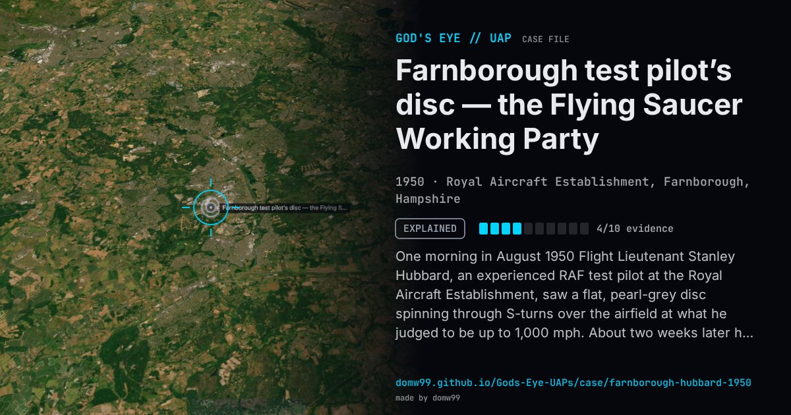

Farnborough test pilot’s disc — the Flying Saucer Working Party

One morning in August 1950 Flight Lieutenant Stanley Hubbard, an experienced RAF test pilot at the Royal Aircraft Establishment, saw a flat, pearl-grey disc spinning through S-turns over the airfield at what he judged to be up to 1,000 mph. About two weeks later he and five other senior officers watched a disc low in the sky towards Guildford and Farnham perform high-speed manoeuvres and a “falling leaf” motion before diving towards the horizon. The reports reached Sir Henry Tizard, the Ministry of Defence’s chief scientific adviser, who in October 1950 set up a small “Flying Saucer” Working Party to study such reports. All six officers were interviewed. The working party’s report of June 1951 explained the Farnborough sightings, and every other report it studied, as misidentified aircraft, balloons and astronomical objects, optical illusions or hoaxes. It stayed secret until it was released to the researchers David Clarke and Andy Roberts in 2001; the file is DEFE 44/119 at The National Archives.
Explanation
The Ministry of Defence’s Flying Saucer Working Party (report DSI/JTIC No. 7, June 1951) judged the first sighting an optical illusion, and the second, by six officers, a normal aircraft manoeuvring at extreme visual range, seen by men already influenced by the first report. It recommended that no further investigation of “mystery aerial phenomena” be undertaken.
What was seen
Shape: A flat, light pearl-grey disc “like a shirt button”
Witnesses: Flt Lt Stanley Hubbard, an RAF test pilot; about two weeks later, he and five other senior officers
Duration: Seconds
Sources
- The National Archives — DEFE 44/119, Unidentified Flying Objects (DSI/JTIC Report No. 7), 1951
- David Clarke — The Flying Saucer Working Party
- Wikipedia — Flying Saucer Working Party
Browse
- United Kingdom
- 1950s
- Explained
- Military encounters
- Official government documents
- Military witnesses
- Pilot and aircrew witnesses
- Lights and fireballs
- Discs and saucers